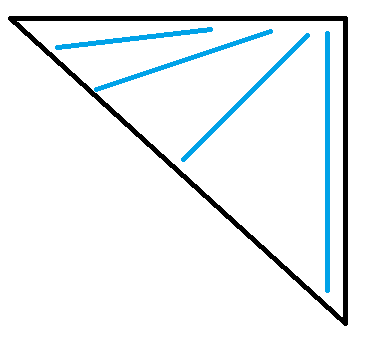
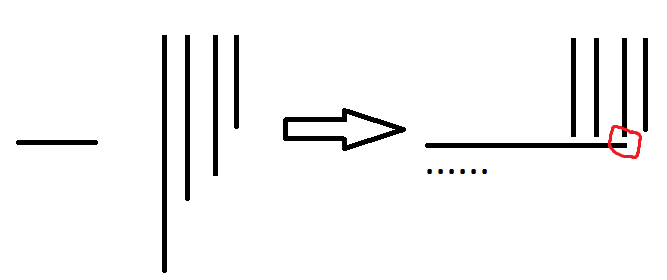

CCPC Final 2023 赛后总结
这就最纯粹的坐牢的乐趣啊。
B
题目大意：
一个合法的字符串数组（不是字符数组），满足：
- $1\le |S_i| \le n$
- $S_{i}$ 是 $S_{i+1}$ 的周期。
- $S_i$ 互不相同
这里 $S$ 是 $T$ 的周期的定义是：
如果 $|S|>|T|$ ，则 $T$ 是 $S$ 的前缀，否则和一般的周期定义一致。
问对于 $n$ 从 $1$ 到 $n$ ，每个 $n$ 能构造的最大的合法字符串数组有多大。
观察
这是个计数题，但我们首先要知道我们在记什么。
一个基本的观察是：
我们构造 $S_1$ 为 $n$ 个不同的字符组成。
那么一个显然的上界是：能由 $S_1$ 的所有前缀拼接出来的不同字符串数量。
现在证明这个上界是对的：
我们可以将上面的字符串集建成一棵字典树，我们令这棵字典树左儿子为这个位置在 $S_1$ 中的下一个字符（这个位置指的是在前缀中的位置），右儿子为第一个字符。
然后考虑做中序遍历，得到的就是一个合法的构造。
证毕。
但是字符集是小写字母咋办，其实可以发现，把 $S_1$ 换成 $ab….$ 仍然成立，只要满足任意一个字符串的 $S_1$ 的前缀表示不存在或者唯一即可。
而这样的字符串构造也非常的简单，只要字符串中除了第一个位置以外的其余位置都和第一个位置不一样就行了，这是充要条件。
那么现在问题可以等价的转换为：
问多少个数列满足：
$1 \le \sum a_i \le n, a_{i}\le a_1$
大佬做法
来自于机房的大佬。
首先根据上面的说法，我们不难设计一个计数方法：
$dp[i][j]$ 表示第一个数字为 $i$ ，同时当前的 $\sum a_i = j$ 的方案数。
初始时 $dp[i][i] = dp[i][i + 1] = 1$ 。
当 $j > i + 1$ 时，满足 $dp[i][j] = dp[i][j - 1] * 2 - dp[i][j - i -1]$ 。
原因是你可以在 $dp[i][j - 1]$ 的基础上选择使最后一个 $a_m+1$ 或者新增一个 $a_m=1$ ，当需要容斥掉 $a_m>i$ 的情况。
另外一方面，从背包的角度看：
$dp[i][j] = \sum\limits_{k=1}^{i}dp[i][j-k]$ 。
然后用 $dp[i][j]$ 的式子减去 $dp[i][j - 1]$ 的式子即可得到上面的转移式。
我们设 $f[n]$ 为 $\sum a_i = n, a_{i}\le a_1$ 的方案数，显然这就是答案的差分，又显然 $f[n] = \sum dp[i][n]$
那么如何维护 $dp[i][n]$ 呢？
可以发现，对于 $dp[i][n]$ ，显然我们只要知道 $dp[i][n],dp[i][n-i],dp[i][n-2i]…$ 就足以完成转移。
即：$b[j]=dp[i][n-(j-1)i]$ 。
显然，下一次：$b[i]=b[i]*2-b[i+1]$ 。
观察到多个 $dp$ 数组的 $b$ 数组转移类似，可以直接累加，而 $b_{1}$ 即为所求。
但是这样还是 $O(n^2)$ ，怎么优化？
注意到当 $i>\sqrt{n}$ 时，$b$ 数组只会开到 $\sqrt{n}$ ，所以直接暴力处理 $i\le \sqrt{n}$ 的 $dp$ 数组，大的用 $b$ 数组转移即可做到 $O(n\sqrt{n})$ 的复杂度。
1 |
|
我观察到了一般，可惜一没观察到 $b$ 是可以合并的，二没观察到可以根号分治（不过一没观察到自然也就观察不到二了）。
对于这个做法一个更加形象的解释是：

如果把 $b[i]$ 看成维护一条条直线的话，那么 $b[i]$ 的斜率就是 $i-1$ ，因此在 $i>\sqrt{n}$ 后，直线就只会处在 $i<\sqrt{n}$ 的位置了，直接根号分治，这样就只用维护 $\sqrt{n}$ 条直线了。
官方做法
我最学不懂的东西，生成函数启动！
考虑做法 $1$ 中背包的角度开始算生成函数：
先枚举第一个数字是啥，再枚举有多少个 $a$ ，则对于 $n$ 的答案就是：
然后这个咋处理呢？
不会。
L
另外开了篇题解详细讲述。
K
题目大意：
给一个 $n*n$ 的网格，要求在网格上放一些顶着上边界的竖棒或者贴着左边界的横棒，要求棒之间不能相交，且要求一些位置不能被棒覆盖，一些位置必须被棒覆盖，问有多少种合法的放棒方案，两种方案不同当且仅当被覆盖的位置集合不同。
形式化的：
合法的 $a,b$ 数组（长度都为 $n$ ，$a$ 表示横着的棒长，$b$ 表示竖着的棒长）需要满足：
$0\le a_{i},b_{i} \le n$
$[a_{i}\ge j] \ne [b_{j}\ge i]$
且有一些额外的要求：
$[a_{c_{k}}\ge d_{k}]+[b_{d_{k}}\ge c_{k}]=1$
$[a_{c’_{k}}\ge d_{k}]+[b_{d_{k}}\ge c’_{k}]=0$
但是不是问有多少种不同的合法数组，具体见原题意。
我的做法
我们要计数的话，更好计数的是合法的 $a,b$ 数组个数，而不大可能去以覆盖的位置集合为状态去计数（后效性太强）。
但是问题是：不同的 $a,b$ 数组可能是同一个放棒方案。
因此我们需要给合法的 $a,b$ 数组加上一些限制，使其与放棒方案构成双射。
我加上的条件是：
$\forall 1 \le i\le n : a_{b_{i} + 1} \ne i$
证明：
单射：
假设有两组 $a,b$ 、$a’,b’$ 不同但对应的是同一个放棒方案。
不妨设 $b_{i} > b’_{i}$ ，那么 $a’_{b’_{i} + 1} \ge i$ 。
那么显然：$\forall i\le j \le a’_{b’_{i} + 1}:b_{j}\ge b’_{i} + 1,b’_{j} = b’_{i}$ 。
因此 $a’_{1+b’_{a’_{b’_{i} + 1}}} = a’_{b’_{i} + 1}$ ，所以 $a’,b’$ 不是合法的，矛盾。

满射：
对于任意一个没加限制的合法的 $a,b$ 数组，如果违反了限制，那么显然可以让 $b_{i}+1$ ，$a_{b_{i}+1}-1$ ，这样就得到了一个覆盖位置集合不变的新的 $a,b$ 数组，由于 $\sum b$ 在不断增加，因此这个过程一定可以停下来，所以是个满射。
证毕。
接下来就是计数了，还挺麻烦的。
设 $dp[i][j]$ 表示前 $i-1$ 个 $b$ 的值都 $<j$ 且 $b_{i}=j$ ，且已经填了 $a_{1}\sim a_{j}$ 的方案数。
$dp[i][j]\to dp[i’][j’]$ 需要考虑的贡献有 $i\to i’$ 的贡献（填 $b$ 的方案）和 $j\to j’$ 的贡献（填 $b$ 的方案）。
然后优化这个 $dp$ 过程就行了。
时间复杂度 ： $O(n^2)$ 。
1 |
|
大概的优化就是注意到 $a$ 的贡献可以用类似前缀和的方式搞搞，也就是代码中的 $now$ 。
而 $b$ 的贡献也是类似前缀和，在每一列的转移结束后，用 $O(n)$ 的时间维护一下 $b$ 的贡献，就可以得到对下一列的贡献了。
大概解释一下 $f,g$ ，就是注意到 $a$ 的贡献中，恰好处于 $j + 1$ 位置的行的贡献，由于限制的存在，这一行的限制要比其余行的限制要多，因此 $g$ 就是存储考虑 $j+1$ 行的列的贡献，而 $f$ 就是不考虑 $j+1$ 行的列的贡献，作用是去维护出新的 $g$ 。
我感觉正解肯定不是这么做的，感觉这个做法有一种力大砖飞的感觉，太不优美了。
官方做法
如何判断一个 $01$ 矩阵是合法的？（下面以 $f$ 为 $01$ 矩阵）
只需要找到一条从左上到右下的路径（只能向下或者向右），满足左边的都是横条，上面的都是竖条。
但问题是，一个矩阵可能对应多条路径，怎么办？
我们设 $a$ 数组满足：$a_{i}$ 是最小的满足：$f_{i,a_{i}}=0,f_{i,a_{i}+1}=1$ ，如果这一行没有这种东西则认为 $a_{i}=0$ 。
可以用 $a$ 可以表示出一条路径 $p_{l}$ ，同理，可以用 $b$ 表示列，然后同样表示出一条路径 $p_r$ 。
如果这个矩阵是合法的，则一条路径是合法的充要条件是在 $p_l,p_r$ 之间。
显然，$f$ 合法当且仅当 $p_l,p_r$ 合法，因此只需要将 $f$ 放在 $p_l$ 或者 $p_r$ 计数就行了。
简单来说，用 $dp$ 计算每个 $p$ 作为 $p_l$ 时有多少合法的 $f$ 与其对应就行了。
时间复杂度：$O(n^2)$ 。
可以发现，与 $p_r$ 对应的合法的 $f$ 的充要条件就是我的做法所加的那个新限制。
非常的 $interesting$ ，相当于是从不同的角度得到了同一个做法了。
更好的实现：
M
题目大意：在一个数轴上有 $n+1$ 个洞 $n$ 个球，间隔分布，然后假设球的滚动方向确定，你可以自由确定球的滚动顺序使最大化不会落入相邻洞的球的数量，然后现在给你一些球的滚动方向，要求你确定一些球的滚动方向使最大化数量。
我的做法
这道题目最难的就是：假设确定了滚动方向，如何找出最大数量。
这个问题可以等价的转化为：将 $>$ 变成 $($ ，将 $<$ 变成 $)$ ，删除若干个括号，使得最终是个合法括号序列，那么这个删法的贡献为：删除的括号数量加上，原来的 $()$ 且最后没有删除其中任何一个括号的数量。
这里可以解释以下后面那个的数量代表什么：和 $><$ 一定会至少浪费一个球的原因一致。
首先，上面的一种删法可以对应一种顺序。
证明：
首先，对于一个区间的球，其能覆盖的洞的情况分三种：左闭右开，左开右闭，左闭右闭中间开。
但无论是哪种，对于 $()$ ，只要中间其实是有球且已经滚完了，都一定存在一种方式使得这两个球都不会被浪费，滚完以后认为 $()$ 已经被删了就行，所以，初始条件就是对于所有的 $()$ ，要么中间已经有球，要么一开始就是 $()$ ，因此综上，至多浪费上面那个数量，证毕。
其次，最优顺序一定对应上面的一种删法。
证明：
考虑最优顺序一定可以调整成下面的情况：先让所有被浪费的球滚进去，然后每次让一个球跨过一个区间。
现在归纳的证明：对于任意一个左闭右开的区间，一定存在一个上面的一个删法使得在浪费的数量相等的情况下，剩下的括号序列要么是合法的，要么多一个 $)$ ，左开右闭则是 $($ 。
比如一开始有个 $)$ ，那么形成的就是一个左闭右开的洞，所以下次如果有洞跨过它一定是左边有一个 $($ 跨过来，那么合法多个 $($ ，$)$ 和 $($ 匹配，同时左闭右开变成左开右闭。
区间合并同理。
证毕。
然后直接拿着这东西 DP 一下就行了，时间复杂度：$O(n^2)$ 。
1 |
|
反思
感觉这一类题目就是没想出来脑子里面就是一坨，想出来了就豁然开朗。
赛时花了很多时间还没有做出来，我的问题。
感觉确实难，但做这么久确实蠢。
基本上这道题目知道如何根据滚动方向判断出最大数量就做完了。
但这一步我就卡了很久，下面是最小化浪费的球数。
首先以为是当成括号匹配，然后是 $><$ 的数量加上失配的数量。
否决理由：$><<$，注意到 $><$ 可以把洞填成左开右闭和左闭右开。
然后以为是相邻两个失配的 $<$ 中间如果有匹配的括号对，那么右边的 $<$ 不会浪费。
否决理由：$><><<<$，注意到只有 $><$ 会浪费中间的洞。
- 发现只要有一个 $><$ 就可以改变一次洞的分布，得到最终做法。
别看上面这个过程非常短，实际过了很长的时间。
虽然我认为这里犯了和之前一样的错误：没有先想着证伪（找例子），而是先想着证明（这个往往是困难的），但是我认为以我当时觉得很对的脑子，我觉得我也找不到例子。（虽然这个时候更好的解决方法是找队友，询问他们对这个正确性的看法，因为队友没经过错误的思考回路，当局者迷，旁观者清，反而更容易找到错误）
可以发现，上面最终发现错误的原因都是：找到了个反例，从而加深了对这道题目的认知，最终更加靠近了正解。
然而我找到上面反例的过程都是写了代码，发现没过样例，发现样例里面就有反例。
因此改进措施为（仅针对比较难的题目）：
- 比赛时先手玩一遍数据（非比赛时不手玩是因为我觉得这样其实比较应试，找数据也是实力的一部分）
- 难题多想一想比较极端或者有代表性的数据，很多时候，在大多数情况足够最优就是在全体情况足够最优，某些数据的最优解法是能够指引最终做法的，我认为这不是一种应试，因为找到数据并说明这个数据的最优做法我认为也是实力的一部分。（简单来说，就是用更多手玩数据的过程去代替更多想证明的过程）
第二条其实已经比较接近队长的思考方式了，就是先想一些极端数据，然后找到一个在这些极端数据下仍然对的做法，根据对的理由思考出最终做法，然后再基于大量数据的思考下，给出最终做法的正确性，这其实是一个很好的思考方式，至少比抓瞎要好得多。
希望下一次能够更快的想出这些题目。
官方题解没看懂，感觉非常的奇妙。
还有一些奇奇怪怪的做法，比如花费 $1$ 的代价删除具有某种形式的子串等等，感觉这个题目的做法很多，在此就不一一赘述了。其实是因为我都没看懂